Input File Format: Aerosol Distribution Mode
Read one mode of an aerosol distribution (number concentration, volume fractions, and mode shape).
- Parameters
-
[in,out] file Spec file. [in,out] aero_data Aero_data data. [in,out] aero_mode Aerosol mode. eof If eof instead of reading data. [in] read_aero_weight_classes Whether the weight classes for each source are specified in inputs.
An aerosol distribution mode has the parameters:
- mode_name (string): the name of the mode (for informational purposes only)
- mass_frac (string): name of file from which to read the species mass fractions — the file format should be Input File Format: Aerosol Mass Fractions
-
diam_type (string): the type of diameter for the mode — must be one of:
geometricfor geometric diameter; ormobilityfor mobility equivalent diameter -
if
diam_typeismobilitythen the following parameters are:- temp (real, unit K): the temperate at which the mobility diameters were measured
- pressure (real, unit Pa): the pressure at which the mobility diameters were measured
-
mode_type (string): the functional form of the mode — must be one of:
log_normalfor a log-normal distribution;expfor an exponential distribution;monofor a mono-disperse distribution; orsampledfor a sampled distribution -
if
mode_typeislog_normalthen the mode distribution shape is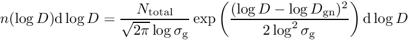
and the following parameters are:- num_conc (real, unit 1/m^3): the total number concentration 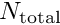 of the mode
- geom_mean_diam (real, unit m): the geometric mean diameter 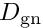
- log10_geom_std_dev (real, dimensionless): 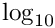 of the geometric standard deviation 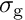 of the diameter
-
if
mode_typeisexpthen the mode distribution shape is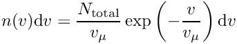
and the following parameters are:- num_conc (real, unit 1/m^3): the total number concentration of the mode
- diam_at_mean_vol (real, unit m): the diameter 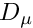 such that 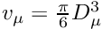
-
if
mode_typeismonothen the mode distribution shape is a delta distribution at diameter 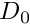 and the following parameters are:- num_conc (real, unit 1/m^3): the total number concentration of the mode
-
radius (real, unit m): the radius
 of the particles, so that 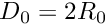
of the particles, so that 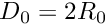
-
if
mode_typeissampledthen the mode distribution shape is piecewise constant (in log-diameter coordinates) and the following parameters are:- size_dist (string): name of file from which to read the size distribution — the file format should be Input File Format: Size Distribution
Example:
mode_name diesel # mode name (descriptive only) mass_frac comp_diesel.dat # mass fractions in each aerosol particle mode_type log_normal # type of distribution num_conc 1.6e8 # particle number density (#/m^3) geom_mean_diam 2.5e-8 # geometric mean diameter (m) log10_geom_std_dev 0.24 # log_10 of geometric standard deviation
See also:
- Input File Format: Spec File Format — the input file text format
- Input File Format: Aerosol Distribution — the format for a complete aerosol distribution with several modes
- Input File Format: Aerosol Mass Fractions — the format for the mass fractions file